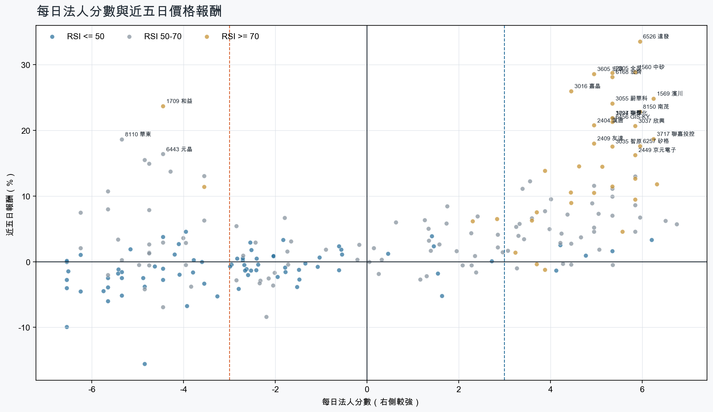
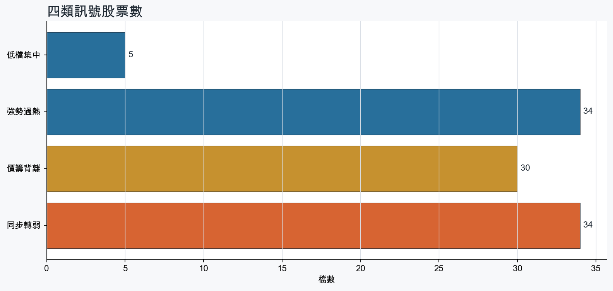
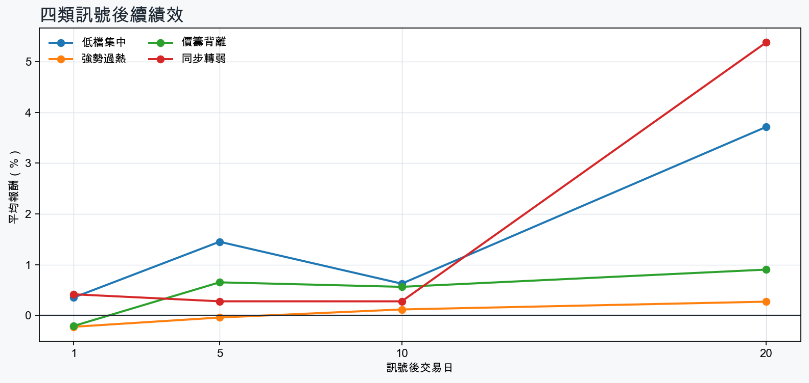

市場情緒偏多
近5日法人合計+4,229,271 張
篩選池上漲比例65.0%
籌碼好 / RSI低5 檔
籌碼差 / 價跌15 檔



EPS × PE VALUATION
法人常用的相對估值
顯示保守、基準與樂觀估值帶，不把單一數字包裝成精準目標價。
最新累計 EPS 依季數年化 × 同產業有效 P/E 的 Q25／中位數／Q75。排除本公司、非正 P/E，並以 1.5×IQR 排除離群值。估值帶是公開資料篩選值，不是法人目標價；未使用分析師預估 EPS。
MOOD × MONEY
情緒與籌碼雷達
熱度代表被討論程度；情緒分與法人方向分開計算。熱門不等於適合追價，樣本不足也不硬判多空。
| 股票 | 情緒 | 討論熱度 | 情緒 × 籌碼 | 情緒 × 基本面 |
|---|---|---|---|---|
| 5347 世界強勢過熱 | 中性分歧 +14.4信心 85 | 1002 篇 / 473 留言 / 1 則新聞 | 高熱分歧法人分 +5.8 | 基本面與情緒分歧基本面分 +3.6 |
| 2409 友達強勢過熱 | 情緒高漲 +49.6信心 100 | 985 篇 / 406 留言 / 3 則新聞 | 情籌共振法人分 +5.0 | 基本面與情緒分歧基本面分 -0.8 |
| 3037 欣興強勢過熱 | 情緒高漲 +37.9信心 100 | 903 篇 / 232 留言 / 3 則新聞 | 情籌共振法人分 +5.8 | 基本面與情緒共振基本面分 +3.6 |
| 2454 聯發科強勢過熱 | 中性分歧 +13.4信心 100 | 864 篇 / 166 留言 / 3 則新聞 | 高熱分歧法人分 +5.1 | 基本面與情緒分歧基本面分 +3.0 |
| 2303 聯電強勢過熱 | 情緒高漲 +61.0信心 95 | 813 篇 / 122 留言 / 2 則新聞 | 情籌共振法人分 +5.8 | 基本面與情緒共振基本面分 +3.6 |
| 3167 大量價籌背離 | 中性分歧 +12.2信心 89 | 721 篇 / 68 留言 / 3 則新聞 | 高熱分歧法人分 -5.7 | 基本面與情緒分歧基本面分 +3.6 |
| 3450 聯鈞同步轉弱 | 情緒高漲 +41.0信心 54 | 681 篇 / 56 留言 / 1 則新聞 | 熱門但法人撤退法人分 -5.7 | 基本面與情緒共振基本面分 +3.6 |
| 3081 聯亞同步轉弱 | 偏多 +34.2信心 58 | 561 篇 / 16 留言 / 3 則新聞 | 熱門但法人撤退法人分 -5.8 | 基本面與情緒共振基本面分 +3.6 |
| 4979 華星光價籌背離 | 偏多 +34.2信心 58 | 561 篇 / 16 留言 / 3 則新聞 | 熱門但法人撤退法人分 -4.8 | 基本面與情緒共振基本面分 +3.6 |
| 6168 宏齊強勢過熱 | 情緒高漲 +60.5信心 60 | 511 篇 / 8 留言 / 3 則新聞 | 情籌共振法人分 +5.3 | 基本面與情緒共振基本面分 +1.2 |
| 5475 德宏同步轉弱 | 偏多 +25.2信心 25 | 441 篇 / 8 留言 / 0 則新聞 | 熱門但法人撤退法人分 -4.5 | 基本面與情緒共振基本面分 +3.6 |
| 5314 世紀*同步轉弱 | 偏空 -29.7信心 30 | 370 篇 / 0 留言 / 3 則新聞 | 情籌雙弱法人分 -4.8 | 基本面佳、情緒悲觀基本面分 +3.6 |
01
籌碼好 / RSI低
優先研究基本面；法人續買且價格止穩時，才適合分批觀察。
| 股票 / 確認狀態 | 每日法人分 | 浦男式近似 | 法人加速度 | RSI / 相對強弱 | 量價確認 | 融資融券 | 每週集保確認 | 基本面 | EPS × 同業 P/E 估值 | 情緒 / 情籌 | 近期消息 | 論壇討論 |
|---|---|---|---|---|---|---|---|---|---|---|---|---|
| 5608 四維航等待確認 · 91 分籌碼有訊號，但價格尚未確認 | +6.2法人 +3,857 張 / 5 天 | 接近 · 71站上月線；中期均線偏多；法人籌碼偏多；留意明顯弱於大盤、量能異常 | +1,687 張近3日 +2,884 / 連續 +7 日 | 44.7相對大盤 -5.7% | 量比 0.34確認分 +1.7近20日弱於大盤；成交量不足 | -%融資 - 張 / 融券 - 張 | +0.16 pp1000張 +0.92 pp | 單月營收年增 +39.1%；累計營收年增 +13.9%；2026 Q2 累計 EPS 0.32仍需觀察下一期財報延續性來源：公開資訊觀測站 | 不適用年化 EPS 與交易所近四季 EPS 差異過大，可能有股本調整或一次性損益 | 樣本不足 +0.0熱度 22 / 信心 10情緒樣本不足 | 個股：四維航(5608)9/24受邀參加富邦證券舉辦之法人說明會ww2.money-link.com.tw · 09/23 | 近期沒有明確提及本股的論壇樣本 |
| 2610 華航等待確認 · 81 分籌碼有訊號，但價格尚未確認 | +4.2法人 +36,184 張 / 4 天 | 接近 · 75站上月線；法人籌碼偏多；法人買盤加速；留意中期均線未翻多、明顯弱於大盤 | +29,471 張近3日 +31,084 / 連續 +3 日 | 47.9相對大盤 -8.3% | 量比 1.99確認分 +1.020日線低於60日線；近20日弱於大盤 | -%融資 - 張 / 融券 - 張 | +0.65 pp1000張 +0.68 pp | 單月營收年增 +27.2%；累計營收年增 +18.6%；2026 Q2 累計 EPS 1.082026 Q2 累計營益率 7.5%來源：公開資訊觀測站 | 基準 NT$ 24.30估值帶 19.68–30.80現價 20.45 · 估值帶內 · 距基準 +18.8%2026 Q2 累計 EPS 1.08 → 年化 2.16航運業同業 P/E 9.11／11.25／14.26 · n=26 · 信心中等以 Q2 累計 EPS 年化，不等同分析師全年預估來源：TWSE／TPEx 每日本益比 | 中性分歧 +0.0熱度 31 / 信心 20情籌混合 | 《投信買超6-1》長榮航(7481)、華航(5498)、第一金(3234)ww2.money-link.com.tw · 09/23孩童未依規就座華航延後降落 航發協會：肯定機長處置公視新聞網PNN · 09/14 | 近期沒有明確提及本股的論壇樣本 |
| 1708 東鹼等待確認 · 51 分籌碼有訊號，但價格尚未確認 | +5.3法人 +2,554 張 / 4 天 | 未命中 · 48法人籌碼偏多；買超具延續性；基本面有支撐；留意未站月線、中期均線未翻多 | -1,626 張近3日 +349 / 連續 +2 日 | 47.0相對大盤 -6.6% | 量比 0.54確認分 -6.0收盤跌破20日線；20日線低於60日線；近20日弱於大盤；成交量不足；法人買盤減速 | -%融資 - 張 / 融券 - 張 | +0.03 pp1000張 +0.46 pp | 單月營收年增 +33.2%；累計營收年增 +16.0%；2026 Q2 累計 EPS 1.98仍需觀察下一期財報延續性來源：公開資訊觀測站 | 基準 NT$ 77.38估值帶 54.49–103.0現價 50.10 · 低於估值帶 · 距基準 +54.5%2026 Q2 累計 EPS 1.98 → 年化 3.96化學工業同業 P/E 13.76／19.54／26.02 · n=32 · 信心中等以 Q2 累計 EPS 年化，不等同分析師全年預估來源：TWSE／TPEx 每日本益比 | 樣本不足 +0.0熱度 0 / 信心 0情緒樣本不足 | 近期沒有通過股票語境篩選的新聞 | 近期沒有明確提及本股的論壇樣本 |
| 1312 國喬等待確認 · 64 分先等基本面止穩 | +4.1法人 +10,426 張 / 4 天 | 接近 · 58中期均線偏多；法人籌碼偏多；買超具延續性；留意未站月線、法人買盤未加速 | -1,437 張近3日 +6,322 / 連續 +3 日 | 46.3相對大盤 +5.7% | 量比 0.33確認分 -0.6收盤跌破20日線；成交量不足；法人買盤減速 | -%融資 - 張 / 融券 - 張 | +0.88 pp1000張 +1.09 pp | 單月營收年增 +89.2%；累計營收年增 +20.2%2026 Q2 累計 EPS -1.68；2026 Q2 累計營益率 -11.2%來源：公開資訊觀測站 | 不適用年化 EPS 非正數，不適合使用本益比估值 | 樣本不足 +0.0熱度 22 / 信心 10情緒樣本不足 | 《塑膠股》國喬開盤暴衝！20分鐘爆2.4萬張- 上市櫃旺得富理財網 · 09/03 | 近期沒有明確提及本股的論壇樣本 |
| 1718 中纖等待確認 · 49 分籌碼有訊號，但價格尚未確認 | +4.8法人 +14,405 張 / 4 天 | 未命中 · 44法人籌碼偏多；買超具延續性；基本面偏正向；留意未站月線、中期均線未翻多 | -1,607 張近3日 +7,105 / 連續 +3 日 | 48.1相對大盤 -7.5% | 量比 0.39確認分 -5.4收盤跌破20日線；20日線低於60日線；近20日弱於大盤；成交量不足；法人買盤減速 | -%融資 - 張 / 融券 - 張 | +1.64 pp1000張 +1.77 pp | 單月營收年增 +4.4%；累計營收年增 +3.3%；2026 Q2 累計 EPS 0.46仍需觀察下一期財報延續性來源：公開資訊觀測站 | 基準 NT$ 17.98估值帶 12.25–23.94現價 10.60 · 低於估值帶 · 距基準 +69.6%2026 Q2 累計 EPS 0.46 → 年化 0.92化學工業同業 P/E 13.31／19.54／26.02 · n=32 · 信心中等以 Q2 累計 EPS 年化，不等同分析師全年預估來源：TWSE／TPEx 每日本益比 | 樣本不足 +9.9熱度 22 / 信心 10情緒樣本不足 | 中纖活化資產 再處分台中銀股票獲利1.14億元UDN · 09/11 | 近期沒有明確提及本股的論壇樣本 |
02
籌碼好 / RSI高
趨勢強但不追價，等待量縮、RSI降溫或回測支撐。
| 股票 / 確認狀態 | 每日法人分 | 浦男式近似 | 法人加速度 | RSI / 相對強弱 | 量價確認 | 融資融券 | 每週集保確認 | 基本面 | EPS × 同業 P/E 估值 | 情緒 / 情籌 | 近期消息 | 論壇討論 |
|---|---|---|---|---|---|---|---|---|---|---|---|---|
| 1560 中砂等待拉回 · 100 分等拉回，不追價 | +5.8法人 +2,857 張 / 4 天 | 接近 · 90站上月線；中期均線偏多；法人籌碼偏多；留意RSI過熱 | +1,663 張近3日 +2,205 / 連續 +3 日 | 79.6相對大盤 +33.4% | 量比 1.69確認分 +6.5價格、量能與籌碼未見明顯弱項 | -%融資 - 張 / 融券 - 張 | +1.53 pp1000張 +0.93 pp | 單月營收年增 +30.4%；累計營收年增 +24.5%；2026 Q2 累計 EPS 6.44仍需觀察下一期財報延續性來源：公開資訊觀測站 | 基準 NT$ 260.3估值帶 178.1–390.9現價 955.0 · 高於估值帶 · 距基準 -72.7%2026 Q2 累計 EPS 6.44 → 年化 12.88電機機械同業 P/E 13.83／20.21／30.35 · n=72 · 信心中等以 Q2 累計 EPS 年化，不等同分析師全年預估來源：TWSE／TPEx 每日本益比 | 偏多 +29.7熱度 37 / 信心 30情籌共振 | 中砂(1560)毛利率衝15季新高！先進製程市占飆8成，到底「訂單排到 2030」的背後關鍵為何？優分析UAnalyze · 09/23【09/23券商評等報告彙整】中砂(1560) 今日僅1家券商發布績效評等報告，評價為看多，目標價為1,060元。CMoney投資網誌 · 09/23 | 近期沒有明確提及本股的論壇樣本 |
| 6168 宏齊等待拉回 · 100 分等拉回，不追價 | +5.3法人 +16,747 張 / 4 天 | 接近 · 86站上月線；中期均線偏多；法人籌碼偏多；留意RSI過熱 | +3,499 張近3日 +11,412 / 連續 -1 日 | 79.6相對大盤 +38.0% | 量比 1.90確認分 +6.5價格、量能與籌碼未見明顯弱項 | -%融資 - 張 / 融券 - 張 | +6.25 pp1000張 +5.41 pp | 單月營收年增 +18.5%；累計營收年增 +9.3%；2026 Q2 累計 EPS 0.172026 Q2 累計營益率 -0.4%來源：公開資訊觀測站 | 基準 NT$ 8.03估值帶 4.33–12.77現價 41.20 · 高於估值帶 · 距基準 -80.5%2026 Q2 累計 EPS 0.17 → 年化 0.34光電同業 P/E 12.73／23.63／37.55 · n=70 · 信心中等以 Q2 累計 EPS 年化，不等同分析師全年預估來源：TWSE／TPEx 每日本益比 | 情緒高漲 +60.5熱度 51 / 信心 60情籌共振 | 9/23 強棒旺旺來交易回顧｜宏齊(6168)表現強勢-林恩如CMoney投資網誌 · 09/23宏齊獲利／自結8月稅後純益400萬元、年減62% EPS 0.02元UDN · 09/21 | [情報] 6168 宏齊 8月自結:0.02 連4漲停中PTT Stock · 09-21 · 8 留言 |
| 2855 統一證等待拉回 · 100 分等拉回，不追價 | +6.3法人 +14,276 張 / 5 天 | 接近 · 90站上月線；中期均線偏多；法人籌碼偏多；留意RSI過熱 | +8,013 張近3日 +11,123 / 連續 +5 日 | 80.3相對大盤 +15.1% | 量比 1.10確認分 +6.5價格、量能與籌碼未見明顯弱項 | -%融資 - 張 / 融券 - 張 | +1.21 pp1000張 +1.14 pp | 單月營收年增 +109.9%；累計營收年增 +217.4%；2026 Q2 累計 EPS 6.96仍需觀察下一期財報延續性來源：公開資訊觀測站 | 基準 NT$ 184.0估值帶 118.3–224.7現價 57.70 · 低於估值帶 · 距基準 +218.9%2026 Q2 累計 EPS 6.96 → 年化 13.92金融保險同業 P/E 8.50／13.22／16.14 · n=39 · 信心中等以 Q2 累計 EPS 年化，不等同分析師全年預估來源：TWSE／TPEx 每日本益比 | 樣本不足 +0.0熱度 0 / 信心 0情緒樣本不足 | 近期沒有通過股票語境篩選的新聞 | 近期沒有明確提及本股的論壇樣本 |
| 8150 南茂等待拉回 · 100 分等拉回，不追價 | +6.0法人 +52,803 張 / 5 天 | 接近 · 76站上月線；法人籌碼偏多；法人買盤加速；留意中期均線未翻多、量能異常 | +15,600 張近3日 +35,438 / 連續 +6 日 | 75.6相對大盤 +10.8% | 量比 3.53確認分 +5.320日線低於60日線 | -%融資 - 張 / 融券 - 張 | +0.22 pp1000張 -0.22 pp | 單月營收年增 +33.3%；累計營收年增 +30.0%；2026 Q2 累計 EPS 2.00仍需觀察下一期財報延續性來源：公開資訊觀測站 | 基準 NT$ 110.4估值帶 71.48–186.6現價 107.0 · 估值帶內 · 距基準 +3.1%2026 Q2 累計 EPS 2.00 → 年化 4.00半導體同業 P/E 17.87／27.59／46.65 · n=147 · 信心中等以 Q2 累計 EPS 年化，不等同分析師全年預估來源：TWSE／TPEx 每日本益比 | 樣本不足 +0.0熱度 0 / 信心 0情緒樣本不足 | 近期沒有通過股票語境篩選的新聞 | 近期沒有明確提及本股的論壇樣本 |
| 1727 中華化等待拉回 · 94 分等拉回，不追價 | +5.3法人 +4,560 張 / 4 天 | 接近 · 73站上月線；中期均線偏多；法人籌碼偏多；留意法人買盤未加速、量能異常 | -7,733 張近3日 -482 / 連續 +2 日 | 78.9相對大盤 +16.8% | 量比 3.19確認分 +1.4法人買盤減速 | -%融資 - 張 / 融券 - 張 | +8.47 pp1000張 +8.31 pp | 單月營收年增 +62.7%；累計營收年增 +26.4%；2026 Q2 累計 EPS 0.66仍需觀察下一期財報延續性來源：公開資訊觀測站 | 基準 NT$ 25.32估值帶 17.67–34.25現價 116.5 · 高於估值帶 · 距基準 -78.3%2026 Q2 累計 EPS 0.66 → 年化 1.32化學工業同業 P/E 13.39／19.18／25.95 · n=33 · 信心中等以 Q2 累計 EPS 年化，不等同分析師全年預估來源：TWSE／TPEx 每日本益比 | 樣本不足 +0.0熱度 0 / 信心 0情緒樣本不足 | 近期沒有通過股票語境篩選的新聞 | 近期沒有明確提及本股的論壇樣本 |
| 6026 福邦證等待拉回 · 100 分等拉回，不追價 | +5.6法人 +3,683 張 / 4 天 | 接近 · 86站上月線；中期均線偏多；法人籌碼偏多；留意動能位置非最佳、流動性偏低 | +1,420 張近3日 +2,836 / 連續 +3 日 | 72.5相對大盤 +0.8% | 量比 1.48確認分 +4.7流動性偏低 | -0.7%融資 -21 張 / 融券 +0 張 | +1.15 pp1000張 +0.94 pp | 單月營收年增 +231.8%；累計營收年增 +170.4%；2026 Q2 累計 EPS 1.08仍需觀察下一期財報延續性來源：公開資訊觀測站 | 基準 NT$ 28.56估值帶 18.36–34.86現價 15.95 · 低於估值帶 · 距基準 +79.0%2026 Q2 累計 EPS 1.08 → 年化 2.16金融保險同業 P/E 8.50／13.22／16.14 · n=39 · 信心中等以 Q2 累計 EPS 年化，不等同分析師全年預估來源：TWSE／TPEx 每日本益比 | 樣本不足 +0.0熱度 0 / 信心 0情緒樣本不足 | 近期沒有通過股票語境篩選的新聞 | 近期沒有明確提及本股的論壇樣本 |
| 5347 世界等待拉回 · 96 分等拉回，不追價 | +5.8法人 +22,550 張 / 4 天 | 接近 · 74站上月線；法人籌碼偏多；買超具延續性；留意中期均線未翻多、法人買盤未加速 | -14,344 張近3日 +5,520 / 連續 +2 日 | 73.6相對大盤 +7.2% | 量比 0.87確認分 +2.120日線低於60日線；法人買盤減速 | -3.8%融資 -463 張 / 融券 +30 張 | +0.91 pp1000張 +1.24 pp | 單月營收年增 +40.5%；累計營收年增 +18.4%；2026 Q2 累計 EPS 2.84仍需觀察下一期財報延續性來源：公開資訊觀測站 | 基準 NT$ 156.7估值帶 101.5–265.0現價 173.0 · 估值帶內 · 距基準 -9.4%2026 Q2 累計 EPS 2.84 → 年化 5.68半導體同業 P/E 17.87／27.59／46.65 · n=147 · 信心中等以 Q2 累計 EPS 年化，不等同分析師全年預估來源：TWSE／TPEx 每日本益比 | 中性分歧 +14.4熱度 100 / 信心 85高熱分歧 | 台灣太猛了！台股市值衝世界第4 全球股市排名一次看自由財經 · 09/23 | [新聞] 台灣太猛了！台股市值衝世界第4 全球股市PTT Stock · 09-23 · 325 留言Re: [新聞] 台灣太猛了！台股市值衝世界第4 全球股市PTT Stock · 09-23 · 148 留言 |
| 3711 日月光投控等待拉回 · 100 分等拉回，不追價 | +4.6法人 +30,009 張 / 5 天 | 命中 · 91站上月線；中期均線偏多；法人籌碼偏多；留意量能尚未確認、動能位置非最佳 | +6,934 張近3日 +19,303 / 連續 +6 日 | 72.8相對大盤 +10.4% | 量比 0.89確認分 +5.7價格、量能與籌碼未見明顯弱項 | -%融資 - 張 / 融券 - 張 | +0.09 pp1000張 -0.01 pp | 單月營收年增 +45.7%；累計營收年增 +28.0%；2026 Q2 累計 EPS 8.04仍需觀察下一期財報延續性來源：公開資訊觀測站 | 基準 NT$ 443.6估值帶 287.4–746.4現價 693.0 · 估值帶內 · 距基準 -36.0%2026 Q2 累計 EPS 8.04 → 年化 16.08半導體同業 P/E 17.87／27.59／46.42 · n=147 · 信心中等以 Q2 累計 EPS 年化，不等同分析師全年預估來源：TWSE／TPEx 每日本益比 | 樣本不足 +0.0熱度 0 / 信心 0情緒樣本不足 | 近期沒有通過股票語境篩選的新聞 | 近期沒有明確提及本股的論壇樣本 |
| 2454 聯發科等待拉回 · 100 分等拉回，不追價 | +5.1法人 +9,546 張 / 5 天 | 命中 · 91站上月線；中期均線偏多；法人籌碼偏多；留意量能尚未確認、動能位置非最佳 | +1,992 張近3日 +6,147 / 連續 +6 日 | 74.1相對大盤 +24.8% | 量比 0.83確認分 +5.3價格、量能與籌碼未見明顯弱項 | -%融資 - 張 / 融券 - 張 | +0.29 pp1000張 +0.26 pp | 單月營收年增 +44.1%；累計營收年增 +5.8%；2026 Q2 累計 EPS 30.44仍需觀察下一期財報延續性來源：公開資訊觀測站 | 基準 NT$ 1,680估值帶 1,088–2,826現價 5,185 · 高於估值帶 · 距基準 -67.6%2026 Q2 累計 EPS 30.44 → 年化 60.88半導體同業 P/E 17.87／27.59／46.42 · n=147 · 信心中等以 Q2 累計 EPS 年化，不等同分析師全年預估來源：TWSE／TPEx 每日本益比 | 中性分歧 +13.4熱度 86 / 信心 100高熱分歧 | 【Hot台股】聯發科昨創天價今卻翻黑...網哀「硬了又軟變回發糕」 分析師：拉回找買點Yahoo股市 · 09/23聯發科今年股價能破萬？Threads掀熱烈討論自由財經 · 09/23 | [情報] 2545皇翔取得聯發科股票PTT Stock · 09-22 · 64 留言Re: [標的] 2454聯發科 2nm天璣PTT Stock · 09-21 · 54 留言 |
| 2449 京元電子等待拉回 · 96 分等拉回，不追價 | +5.8法人 +50,204 張 / 4 天 | 命中 · 89站上月線；中期均線偏多；法人籌碼偏多；留意法人買盤未加速、動能位置非最佳 | -5,009 張近3日 +22,964 / 連續 -1 日 | 70.1相對大盤 +18.0% | 量比 1.29確認分 +2.5法人買盤減速 | -%融資 - 張 / 融券 - 張 | +0.71 pp1000張 +0.85 pp | 單月營收年增 +31.6%；累計營收年增 +35.5%；2026 Q2 累計 EPS 3.91仍需觀察下一期財報延續性來源：公開資訊觀測站 | 基準 NT$ 215.8估值帶 139.7–364.8現價 304.0 · 估值帶內 · 距基準 -29.0%2026 Q2 累計 EPS 3.91 → 年化 7.82半導體同業 P/E 17.87／27.59／46.65 · n=147 · 信心中等以 Q2 累計 EPS 年化，不等同分析師全年預估來源：TWSE／TPEx 每日本益比 | 樣本不足 +0.0熱度 0 / 信心 0情緒樣本不足 | 近期沒有通過股票語境篩選的新聞 | 近期沒有明確提及本股的論壇樣本 |
| 2303 聯電等待拉回 · 92 分等拉回，不追價 | +5.8法人 +129,482 張 / 4 天 | 接近 · 73站上月線；中期均線偏多；法人籌碼偏多；留意法人買盤未加速、量能異常 | -33,070 張近3日 +53,397 / 連續 -1 日 | 79.7相對大盤 +22.9% | 量比 0.63確認分 +1.1成交量不足；法人買盤減速 | -%融資 - 張 / 融券 - 張 | +1.75 pp1000張 +1.58 pp | 單月營收年增 +30.7%；累計營收年增 +14.7%；2026 Q2 累計 EPS 4.68仍需觀察下一期財報延續性來源：公開資訊觀測站 | 基準 NT$ 260.2估值帶 167.3–436.6現價 160.0 · 低於估值帶 · 距基準 +62.6%2026 Q2 累計 EPS 4.68 → 年化 9.36半導體同業 P/E 17.87／27.80／46.65 · n=147 · 信心中等以 Q2 累計 EPS 年化，不等同分析師全年預估來源：TWSE／TPEx 每日本益比 | 情緒高漲 +61.0熱度 81 / 信心 95情籌共振 | 聯電、鴻海、友達、台積電、欣興、南電…台股力拚站穩48K誰是扛壩子？這檔外資買超48萬張又變賣超還有戲？今周刊 · 09/23聯電(2303)股價138⭢168.5元5天漲逾22%，現在還能買？兩股勢力灌入、最新目標價曝光：一件事心臟得大顆今周刊 · 09/22 | [標的] 2303 聯電 二哥壯膽多PTT Stock · 09-19 · 61 留言[新聞] 「低本益比族群」伺機補漲 力積電、聯電PTT Stock · 09-20 · 34 留言 |
| 2404 漢唐等待拉回 · 100 分等拉回，不追價 | +5.0法人 +2,499 張 / 3 天 | 接近 · 76站上月線；法人籌碼偏多；法人買盤加速；留意中期均線未翻多、量能異常 | +1,043 張近3日 +1,765 / 連續 +2 日 | 77.2相對大盤 +9.1% | 量比 3.42確認分 +5.320日線低於60日線 | -%融資 - 張 / 融券 - 張 | +0.18 pp1000張 +0.10 pp | 單月營收年增 +59.1%；累計營收年增 +71.6%；2026 Q2 累計 EPS 36.23仍需觀察下一期財報延續性來源：公開資訊觀測站 | 基準 NT$ 1,482估值帶 1,092–2,632現價 1,250 · 估值帶內 · 距基準 +18.5%2026 Q2 累計 EPS 36.23 → 年化 72.46其他電子同業 P/E 15.07／20.45／36.33 · n=67 · 信心中等以 Q2 累計 EPS 年化，不等同分析師全年預估來源：TWSE／TPEx 每日本益比 | 樣本不足 +0.0熱度 0 / 信心 0情緒樣本不足 | 近期沒有通過股票語境篩選的新聞 | 近期沒有明確提及本股的論壇樣本 |
| 3717 聯嘉投控等待拉回 · 90 分等拉回，不追價 | +6.2法人 +6,966 張 / 5 天 | 接近 · 69站上月線；法人籌碼偏多；買超具延續性；留意中期均線未翻多、法人買盤未加速 | -3,367 張近3日 +1,951 / 連續 +6 日 | 75.6相對大盤 +7.4% | 量比 6.26確認分 +1.220日線低於60日線；法人買盤減速 | -%融資 - 張 / 融券 - 張 | +0.61 pp1000張 +0.54 pp | 單月營收年增 +10.0%；累計營收年增 +891.3%；2026 Q2 累計 EPS 1.152026 Q2 累計營益率 7.7%來源：公開資訊觀測站 | 不適用年化 EPS 與交易所近四季 EPS 差異過大，可能有股本調整或一次性損益 | 樣本不足 +0.0熱度 22 / 信心 10情緒樣本不足 | 【11:57 即時新聞】聯嘉投控(3717)股價走強，市場聚焦車用LED與籌碼轉多CMoney投資網誌 · 09/23 | 近期沒有明確提及本股的論壇樣本 |
| 3037 欣興等待拉回 · 97 分等拉回，不追價 | +5.8法人 +16,990 張 / 4 天 | 接近 · 75站上月線；中期均線偏多；法人籌碼偏多；留意明顯弱於大盤、RSI過熱 | +11,560 張近3日 +13,521 / 連續 +4 日 | 79.1相對大盤 -6.6% | 量比 1.05確認分 +2.9近20日弱於大盤 | -%融資 - 張 / 融券 - 張 | +0.34 pp1000張 +0.61 pp | 單月營收年增 +56.3%；累計營收年增 +34.2%；2026 Q2 累計 EPS 11.70仍需觀察下一期財報延續性來源：公開資訊觀測站 | 基準 NT$ 611.0估值帶 415.8–1,007現價 1,160 · 高於估值帶 · 距基準 -47.3%2026 Q2 累計 EPS 11.70 → 年化 23.40電子零組件同業 P/E 17.77／26.11／43.04 · n=149 · 信心中等以 Q2 累計 EPS 年化，不等同分析師全年預估來源：TWSE／TPEx 每日本益比 | 情緒高漲 +37.9熱度 90 / 信心 100情籌共振 | 聯電、鴻海、友達、台積電、欣興、南電…台股力拚站穩48K誰是扛壩子？這檔外資買超48萬張又變賣超還有戲？今周刊 · 09/23PCB強勢上攻！「這檔」飆漲停牽欣興累漲27.7%創高 台燿攻連4紅、南電大漲5%Yahoo股市 · 09/23 | [新聞] 欣興點燈！開盤鎖漲停價1120元 狂吸60億PTT Stock · 09-22 · 133 留言[新聞] 焦點股》欣興：封閉「洗產地」跳空缺口PTT Stock · 09-23 · 65 留言 |
| 2409 友達等待拉回 · 100 分等拉回，不追價 | +5.0法人 +357,087 張 / 3 天 | 接近 · 81站上月線；中期均線偏多；法人籌碼偏多；留意基本面偏弱、動能位置非最佳 | +279,553 張近3日 +346,626 / 連續 -1 日 | 71.8相對大盤 +29.5% | 量比 2.27確認分 +6.5價格、量能與籌碼未見明顯弱項 | -%融資 - 張 / 融券 - 張 | +3.55 pp1000張 +3.66 pp | 2026 Q2 累計 EPS 0.03單月營收年增 -5.9%；累計營收年增 -1.8%；2026 Q2 累計營益率 -0.3%來源：公開資訊觀測站 | 基準 NT$ 1.42估值帶 0.76–2.25現價 34.70 · 高於估值帶 · 距基準 -95.9%2026 Q2 累計 EPS 0.03 → 年化 0.06光電同業 P/E 12.73／23.63／37.55 · n=70 · 信心較低以 Q2 累計 EPS 年化，不等同分析師全年預估；年化 EPS 為交易所近四季 EPS 的 0.25 倍，需保守解讀來源：TWSE／TPEx 每日本益比 | 情緒高漲 +49.6熱度 98 / 信心 100情籌共振 | 友達連2根漲停後慘摔5.32％！「兇手」抓到了 62萬股東傻眼自由財經 · 09/23友達股價和先進封裝合作有關嗎？市場傳聞與公司布局一次看懂-實習大人-林序安CMoney投資網誌 · 09/23 | [標的] 2409友達 我們的人點火送分多PTT Stock · 09-22 · 115 留言[新聞] 友達連2漲停！爆115萬張天量創16年新高PTT Stock · 09-23 · 91 留言 |
03
籌碼差 / 股價上漲
可能是事件行情或軋空；沒有籌碼改善前避免追高。
| 股票 / 確認狀態 | 每日法人分 | 浦男式近似 | 法人加速度 | RSI / 相對強弱 | 量價確認 | 融資融券 | 每週集保確認 | 基本面 | EPS × 同業 P/E 估值 | 情緒 / 情籌 | 近期消息 | 論壇討論 |
|---|---|---|---|---|---|---|---|---|---|---|---|---|
| 1709 和益風險警示 · 70 分背離警戒，避免追高 | -4.5法人 -11,378 張 / 2 天 | 接近 · 62站上月線；中期均線偏多；法人買盤加速；留意法人籌碼偏弱、買超延續不足 | +10,938 張近3日 +2,047 / 連續 -2 日 | 79.1相對大盤 +23.6% | 量比 3.37確認分 +5.3價格、量能與籌碼未見明顯弱項 | -%融資 - 張 / 融券 - 張 | +1.52 pp1000張 +2.15 pp | 單月營收年增 +82.7%；累計營收年增 +22.3%；2026 Q2 累計 EPS 1.30仍需觀察下一期財報延續性來源：公開資訊觀測站 | 基準 NT$ 48.28估值帶 34.61–67.65現價 48.30 · 估值帶內 · 距基準 -0.0%2026 Q2 累計 EPS 1.30 → 年化 2.60化學工業同業 P/E 13.31／18.57／26.02 · n=32 · 信心中等以 Q2 累計 EPS 年化，不等同分析師全年預估來源：TWSE／TPEx 每日本益比 | 樣本不足 +0.0熱度 0 / 信心 0情緒樣本不足 | 近期沒有通過股票語境篩選的新聞 | 近期沒有明確提及本股的論壇樣本 |
| 8110 華東風險警示 · 35 分背離警戒，避免追高 | -5.3法人 -8,922 張 / 1 天 | 未命中 · 50站上月線；相對大盤偏強；基本面有支撐；留意中期均線未翻多、法人籌碼偏弱 | -10,974 張近3日 -9,523 / 連續 -3 日 | 66.6相對大盤 +1.9% | 量比 3.06確認分 -0.220日線低於60日線；法人買盤減速 | -%融資 - 張 / 融券 - 張 | -0.59 pp1000張 -0.29 pp | 單月營收年增 +24.8%；累計營收年增 +15.5%；2026 Q2 累計 EPS 2.592026 Q2 累計營益率 2.7%來源：公開資訊觀測站 | 基準 NT$ 144.0估值帶 94.28–241.7現價 49.70 · 低於估值帶 · 距基準 +189.8%2026 Q2 累計 EPS 2.59 → 年化 5.18半導體同業 P/E 18.20／27.80／46.65 · n=147 · 信心中等以 Q2 累計 EPS 年化，不等同分析師全年預估來源：TWSE／TPEx 每日本益比 | 偏多 +29.7熱度 37 / 信心 30熱門但法人撤退 | 封測股炸了！6大廠砸近6千億搶AI大單 華東、南茂漲停「這波還沒完」工商時報 · 09/21焦點股》華東：封測需求看旺 漲停站上月線自由財經 · 09/18 | 近期沒有明確提及本股的論壇樣本 |
| 6443 元晶風險警示 · 22 分背離警戒，避免追高 | -4.5法人 -7,874 張 / 2 天 | 未命中 · 39站上月線；量價健康；動能強但未過熱；留意中期均線未翻多、法人籌碼偏弱 | -11,297 張近3日 -9,125 / 連續 +1 日 | 66.7相對大盤 -1.3% | 量比 1.57確認分 +0.220日線低於60日線；法人買盤減速 | -%融資 - 張 / 融券 - 張 | -1.12 pp1000張 -1.50 pp | 尚無明確成長訊號單月營收年增 -23.0%；累計營收年增 -36.2%；2026 Q2 累計 EPS -0.60來源：公開資訊觀測站 | 不適用年化 EPS 非正數，不適合使用本益比估值 | 中性分歧 +0.0熱度 37 / 信心 30情籌混合 | 盤中刷48,601點新高！友達、欣興、元晶大噴發「中小股怎麼倒一片？」專家：高檔操作只能抓緊這族群- 上市櫃旺得富理財網 · 09/22元晶(6443)做什麼？8月營收年減22.98%，財報關鍵數字與法說會焦點解析pocket.tw · 09/21 | 近期沒有明確提及本股的論壇樣本 |
| 2368 金像電風險警示 · 51 分背離警戒，避免追高 | -4.8法人 -5,434 張 / 2 天 | 接近 · 75站上月線；中期均線偏多；明顯強於大盤；留意法人籌碼偏弱、法人買盤未加速 | -265 張近3日 -3,163 / 連續 +1 日 | 53.4相對大盤 +3.0% | 量比 1.69確認分 +2.6法人買盤減速 | -%融資 - 張 / 融券 - 張 | -1.01 pp1000張 -0.47 pp | 單月營收年增 +76.4%；累計營收年增 +71.2%；2026 Q2 累計 EPS 16.17仍需觀察下一期財報延續性來源：公開資訊觀測站 | 基準 NT$ 848.3估值帶 577.0–1,404現價 1,140 · 估值帶內 · 距基準 -25.6%2026 Q2 累計 EPS 16.17 → 年化 32.34電子零組件同業 P/E 17.84／26.23／43.41 · n=150 · 信心中等以 Q2 累計 EPS 年化，不等同分析師全年預估來源：TWSE／TPEx 每日本益比 | 偏多 +29.7熱度 37 / 信心 30熱門但法人撤退 | 金像電7、8月營收優於預期 法人估今年 EPS 將突破40元經濟日報 · 09/23PCB獲利王神拉漲停還能追？金像電3大法人1次評：目標價、EPS完整看- 上市櫃旺得富理財網 · 09/23 | 近期沒有明確提及本股的論壇樣本 |
| 4919 新唐風險警示 · 32 分背離警戒，避免追高 | -4.8法人 -13,280 張 / 1 天 | 未命中 · 40站上月線；明顯強於大盤；動能強但未過熱；留意中期均線未翻多、法人籌碼偏弱 | -12,754 張近3日 -12,871 / 連續 -1 日 | 69.4相對大盤 +4.1% | 量比 6.27確認分 +0.420日線低於60日線；法人買盤減速 | -%融資 - 張 / 融券 - 張 | +0.47 pp1000張 +0.71 pp | 單月營收年增 +12.1%；累計營收年增 +1.0%2026 Q2 累計 EPS -0.57；2026 Q2 累計營益率 -2.8%來源：公開資訊觀測站 | 不適用年化 EPS 非正數，不適合使用本益比估值 | 偏空 -29.7熱度 37 / 信心 30情籌雙弱 | 【11:04 即時新聞】新唐(4919)股價走強，資金聚焦MCU與BMC題材CMoney投資網誌 · 09/234919 新唐 - 外資賣超5千多 越賣股價越猛⋯按個讚吧 - 股市爆料同學會CMoney · 09/23 | 近期沒有明確提及本股的論壇樣本 |
| 8028 昇陽半導體風險警示 · 24 分背離警戒，避免追高 | -5.7法人 -9,735 張 / 1 天 | 未命中 · 54站上月線；量價健康；基本面有支撐；留意中期均線未翻多、法人籌碼偏弱 | -6,342 張近3日 -8,742 / 連續 -3 日 | 62.1相對大盤 -1.9% | 量比 1.17確認分 -1.520日線低於60日線；法人買盤減速 | -%融資 - 張 / 融券 - 張 | -2.94 pp1000張 -2.39 pp | 單月營收年增 +25.6%；累計營收年增 +29.1%；2026 Q2 累計 EPS 3.32仍需觀察下一期財報延續性來源：公開資訊觀測站 | 基準 NT$ 183.2估值帶 118.7–309.8現價 258.0 · 估值帶內 · 距基準 -29.0%2026 Q2 累計 EPS 3.32 → 年化 6.64半導體同業 P/E 17.87／27.59／46.65 · n=147 · 信心中等以 Q2 累計 EPS 年化，不等同分析師全年預估來源：TWSE／TPEx 每日本益比 | 樣本不足 +0.0熱度 22 / 信心 10情緒樣本不足 | 矽晶圓漲跌各半！「這檔」法說報喜直奔漲停、合邦、嘉晶齊亮燈 昇陽半導體、中美晶仍挫逾3%FTNN 新聞 · 09/23 | 近期沒有明確提及本股的論壇樣本 |
| 4960 誠美材風險警示 · 36 分背離警戒，避免追高 | -4.3法人 -5,495 張 / 2 天 | 未命中 · 42站上月線；法人買盤加速；量價健康；留意中期均線未翻多、法人籌碼偏弱 | +231 張近3日 -2,125 / 連續 +1 日 | 64.0相對大盤 -4.1% | 量比 1.49確認分 +2.020日線低於60日線；近20日弱於大盤 | -%融資 - 張 / 融券 - 張 | +0.51 pp1000張 +0.57 pp | 尚無明確成長訊號單月營收年增 -13.9%；累計營收年增 -9.7%；2026 Q2 累計 EPS -0.60來源：公開資訊觀測站 | 不適用年化 EPS 非正數，不適合使用本益比估值 | 樣本不足 +0.0熱度 0 / 信心 0情緒樣本不足 | 近期沒有通過股票語境篩選的新聞 | 近期沒有明確提及本股的論壇樣本 |
| 2406 國碩風險警示 · 34 分背離警戒，避免追高 | -3.5法人 -4,371 張 / 3 天 | 接近 · 59站上月線；買超具延續性；量價健康；留意中期均線未翻多、法人籌碼偏弱 | -4,836 張近3日 -4,449 / 連續 -2 日 | 68.4相對大盤 -3.0% | 量比 1.57確認分 -1.720日線低於60日線；法人買盤減速 | -%融資 - 張 / 融券 - 張 | -0.86 pp1000張 -1.20 pp | 單月營收年增 +86.1%；累計營收年增 +114.9%；2026 Q2 累計 EPS 0.332026 Q2 累計營益率 4.9%來源：公開資訊觀測站 | 基準 NT$ 15.60估值帶 8.40–24.78現價 29.90 · 高於估值帶 · 距基準 -47.8%2026 Q2 累計 EPS 0.33 → 年化 0.66光電同業 P/E 12.73／23.63／37.55 · n=70 · 信心較低以 Q2 累計 EPS 年化，不等同分析師全年預估；年化 EPS 為交易所近四季 EPS 的 3.67 倍，需保守解讀來源：TWSE／TPEx 每日本益比 | 中性分歧 +0.0熱度 37 / 信心 30情籌混合 | 熱門股》主力進場大買 國碩衝漲停stock.ltn.com.tw · 09/222406 國碩 - 散熱無法被認可的話,要怎麼出頭天? - 股市爆料同學會CMoney · 09/23 | 近期沒有明確提及本股的論壇樣本 |
| 3167 大量風險警示 · 65 分背離警戒，避免追高 | -5.7法人 -1,637 張 / 1 天 | 接近 · 82站上月線；中期均線偏多；法人買盤加速；留意法人籌碼偏弱、買超延續不足 | +289 張近3日 -848 / 連續 -1 日 | 65.3相對大盤 +17.7% | 量比 1.28確認分 +6.5價格、量能與籌碼未見明顯弱項 | -%融資 - 張 / 融券 - 張 | -1.34 pp1000張 -3.42 pp | 單月營收年增 +153.0%；累計營收年增 +135.2%；2026 Q2 累計 EPS 9.26仍需觀察下一期財報延續性來源：公開資訊觀測站 | 基準 NT$ 367.2估值帶 254.7–542.5現價 890.0 · 高於估值帶 · 距基準 -58.7%2026 Q2 累計 EPS 9.26 → 年化 18.52電機機械同業 P/E 13.75／19.83／29.29 · n=71 · 信心中等以 Q2 累計 EPS 年化，不等同分析師全年預估來源：TWSE／TPEx 每日本益比 | 中性分歧 +12.2熱度 72 / 信心 89高熱分歧 | 上櫃公司鑫創不堪虧損 已提交大量解僱計畫書！11/23起分批資遣員工Yahoo股市 · 09/23大量半導體占比拚破1成，背鑽機訂單旺到2027年台視全球資訊網 · 09/23 | [新聞] 友達爆86萬張大量攻漲停！股價飆16年新PTT Stock · 09-22 · 68 留言 |
| 2369 菱生風險警示 · 16 分背離警戒，避免追高 | -6.2法人 -7,693 張 / 0 天 | 未命中 · 50站上月線；量價健康；基本面有支撐；留意中期均線未翻多、法人籌碼偏弱 | -981 張近3日 -4,289 / 連續 -5 日 | 58.2相對大盤 -7.1% | 量比 1.68確認分 -2.820日線低於60日線；近20日弱於大盤；法人買盤減速 | -%融資 - 張 / 融券 - 張 | -1.35 pp1000張 -1.64 pp | 單月營收年增 +32.9%；累計營收年增 +36.3%；2026 Q2 累計 EPS 0.292026 Q2 累計營益率 3.2%來源：公開資訊觀測站 | 基準 NT$ 16.07估值帶 10.39–27.04現價 31.65 · 高於估值帶 · 距基準 -49.2%2026 Q2 累計 EPS 0.29 → 年化 0.58半導體同業 P/E 17.91／27.70／46.62 · n=148 · 信心較低以 Q2 累計 EPS 年化，不等同分析師全年預估；交易所無有效本益比，無法交叉檢核近四季 EPS來源：TWSE／TPEx 每日本益比 | 樣本不足 +0.0熱度 0 / 信心 0情緒樣本不足 | 近期沒有通過股票語境篩選的新聞 | 近期沒有明確提及本股的論壇樣本 |
| 3707 漢磊風險警示 · 35 分背離警戒，避免追高 | -3.5法人 -6,147 張 / 3 天 | 未命中 · 41站上月線；買超具延續性；明顯強於大盤；留意中期均線未翻多、法人籌碼偏弱 | -8,322 張近3日 -6,413 / 連續 -1 日 | 70.5相對大盤 +3.8% | 量比 7.86確認分 -0.320日線低於60日線；法人買盤減速；融資單日增幅偏高 | +15.8%融資 +1,747 張 / 融券 +93 張 | +0.05 pp1000張 +0.42 pp | 單月營收年增 +29.5%；累計營收年增 +26.4%2026 Q2 累計 EPS -0.57；2026 Q2 累計營益率 -2.2%來源：公開資訊觀測站 | 不適用年化 EPS 非正數，不適合使用本益比估值 | 中性分歧 +0.0熱度 37 / 信心 30情籌混合 | 3707 漢磊- 投資最難的不是選股，是認錯。認錯之後重建紀律，才是真正能讓你... - 股市爆料同學會CMoney · 09/23熱門股／漢磊推Gen5 SiC平台漲逾8%！嘉晶亮燈漲停環球晶挑戰重返千元| 產經非凡新聞台 · 09/23 | 近期沒有明確提及本股的論壇樣本 |
| 5351 鈺創風險警示 · 8 分背離警戒，避免追高 | -4.5法人 -4,283 張 / 2 天 | 未命中 · 40中期均線偏多；基本面有支撐；動能強但未過熱；留意未站月線、法人籌碼偏弱 | -6,071 張近3日 -5,303 / 連續 -3 日 | 49.5相對大盤 -13.0% | 量比 0.59確認分 -4.8收盤跌破20日線；近20日弱於大盤；成交量不足；法人買盤減速 | -1.0%融資 -139 張 / 融券 +13 張 | -8.04 pp1000張 -8.23 pp | 單月營收年增 +525.3%；累計營收年增 +488.9%；2026 Q2 累計 EPS 6.69仍需觀察下一期財報延續性來源：公開資訊觀測站 | 基準 NT$ 372.0估值帶 243.5–624.2現價 109.5 · 低於估值帶 · 距基準 +239.7%2026 Q2 累計 EPS 6.69 → 年化 13.38半導體同業 P/E 18.20／27.80／46.65 · n=147 · 信心較低以 Q2 累計 EPS 年化，不等同分析師全年預估；年化 EPS 為交易所近四季 EPS 的 2.07 倍，需保守解讀來源：TWSE／TPEx 每日本益比 | 樣本不足 +0.0熱度 22 / 信心 10情緒樣本不足 | 【13:17 即時新聞】鈺創(5351)盤中穩步走強，利基記憶體族群續受關注CMoney投資網誌 · 09/23 | 近期沒有明確提及本股的論壇樣本 |
| 4979 華星光風險警示 · 33 分背離警戒，避免追高 | -4.8法人 -2,271 張 / 2 天 | 接近 · 60站上月線；中期均線偏多；量價健康；留意法人籌碼偏弱、法人買盤未加速 | -3,947 張近3日 -3,062 / 連續 -2 日 | 52.3相對大盤 -8.0% | 量比 0.92確認分 -2.1近20日弱於大盤；法人買盤減速；融資單日增幅偏高 | +5.1%融資 +670 張 / 融券 +21 張 | +1.97 pp1000張 +1.36 pp | 單月營收年增 +37.4%；累計營收年增 +20.3%；2026 Q2 累計 EPS 2.91仍需觀察下一期財報延續性來源：公開資訊觀測站 | 基準 NT$ 123.7估值帶 83.46–221.3現價 590.0 · 高於估值帶 · 距基準 -79.0%2026 Q2 累計 EPS 2.91 → 年化 5.82通信網路同業 P/E 14.34／21.26／38.02 · n=58 · 信心中等以 Q2 累計 EPS 年化，不等同分析師全年預估來源：TWSE／TPEx 每日本益比 | 偏多 +34.2熱度 56 / 信心 58熱門但法人撤退 | 被迫開牌！華星光8月EPS 0.64 元 前8月EPS 4.47元自由財經 · 09/23華星光獲利／8月自結淨賺0.92億元 EPS 0.64元 成長趨勢明確UDN · 09/23 | [情報] 2323 中環 買聯亞207張、華星光590張PTT Stock · 09-23 · 16 留言 |
| 4991 環宇-KY風險警示 · 12 分背離警戒，避免追高 | -4.0法人 -2,212 張 / 2 天 | 未命中 · 46中期均線偏多；量價健康；基本面有支撐；留意未站月線、法人籌碼偏弱 | -1,325 張近3日 -2,159 / 連續 -2 日 | 42.1相對大盤 -15.2% | 量比 1.12確認分 -5.0收盤跌破20日線；近20日弱於大盤；法人買盤減速 | +0.0%融資 +4 張 / 融券 -74 張 | -3.77 pp1000張 -2.74 pp | 單月營收年增 +45.6%；累計營收年增 +45.6%；2026 Q2 累計 EPS 2.58仍需觀察下一期財報延續性來源：公開資訊觀測站 | 基準 NT$ 142.9估值帶 92.42–240.6現價 447.5 · 高於估值帶 · 距基準 -68.1%2026 Q2 累計 EPS 2.58 → 年化 5.16半導體同業 P/E 17.91／27.70／46.62 · n=148 · 信心中等以 Q2 累計 EPS 年化，不等同分析師全年預估來源：TWSE／TPEx 每日本益比 | 樣本不足 +0.0熱度 0 / 信心 0情緒樣本不足 | 近期沒有通過股票語境篩選的新聞 | 近期沒有明確提及本股的論壇樣本 |
| 4931 新盛力風險警示 · 1 分背離警戒，避免追高 | -6.2法人 -2,522 張 / 0 天 | 未命中 · 40中期均線偏多；基本面有支撐；動能強但未過熱；留意未站月線、法人籌碼偏弱 | -416 張近3日 -1,359 / 連續 -5 日 | 49.4相對大盤 -13.3% | 量比 0.31確認分 -4.8收盤跌破20日線；近20日弱於大盤；成交量不足；法人買盤減速 | +3.5%融資 +329 張 / 融券 -5 張 | -14.46 pp1000張 -13.01 pp | 單月營收年增 +125.9%；累計營收年增 +88.4%；2026 Q2 累計 EPS 3.69仍需觀察下一期財報延續性來源：公開資訊觀測站 | 基準 NT$ 117.8估值帶 91.44–169.1現價 238.5 · 高於估值帶 · 距基準 -50.6%2026 Q2 累計 EPS 3.69 → 年化 7.38電腦及週邊同業 P/E 12.39／15.96／22.91 · n=76 · 信心中等以 Q2 累計 EPS 年化，不等同分析師全年預估來源：TWSE／TPEx 每日本益比 | 樣本不足 +0.0熱度 22 / 信心 10情緒樣本不足 | H2單季皆有賺逾2元實力，新盛力今年EPS拚9元MoneyDJ · 08/31 | 近期沒有明確提及本股的論壇樣本 |
04
籌碼差 / 股價下跌
籌碼與價格同弱，原則上迴避，等待法人與大戶同時回補。
| 股票 / 確認狀態 | 每日法人分 | 浦男式近似 | 法人加速度 | RSI / 相對強弱 | 量價確認 | 融資融券 | 每週集保確認 | 基本面 | EPS × 同業 P/E 估值 | 情緒 / 情籌 | 近期消息 | 論壇討論 |
|---|---|---|---|---|---|---|---|---|---|---|---|---|
| 5314 世紀*風險警示 · 45 分迴避，等待籌碼翻正 | -4.8法人 -21,268 張 / 1 天 | 未命中 · 43中期均線偏多；法人買盤加速；基本面有支撐；留意未站月線、法人籌碼偏弱 | +4,326 張近3日 -8,405 / 連續 -1 日 | 44.1相對大盤 -31.4% | 量比 0.45確認分 -0.2收盤跌破20日線；近20日弱於大盤；成交量不足 | -7.8%融資 -1,220 張 / 融券 -1,038 張 | +4.60 pp1000張 +4.69 pp | 單月營收年增 +102.5%；累計營收年增 +151.4%；2026 Q2 累計 EPS 0.66仍需觀察下一期財報延續性來源：公開資訊觀測站 | 基準 NT$ 18.86估值帶 13.75–31.47現價 26.00 · 估值帶內 · 距基準 -27.4%2026 Q2 累計 EPS 0.66 → 年化 1.32其他同業 P/E 10.42／14.29／23.84 · n=71 · 信心較低以 Q2 累計 EPS 年化，不等同分析師全年預估；年化 EPS 為交易所近四季 EPS 的 0.29 倍，需保守解讀來源：TWSE／TPEx 每日本益比 | 偏空 -29.7熱度 37 / 信心 30情籌雙弱 | 11根漲停全吐回？世紀*「6天暴跌34%」打入處置股 華經狂飆27%也被關Yahoo股市 · 09/21台股2檔「抓去關」新名單！世紀*短線摔逾3成 明起處置到9／30ETtoday財經雲 · 09/21 | 近期沒有明確提及本股的論壇樣本 |
| 3406 玉晶光風險警示 · 55 分迴避，等待籌碼翻正 | -6.5法人 -3,511 張 / 0 天 | 接近 · 58中期均線偏多；法人買盤加速；明顯強於大盤；留意未站月線、法人籌碼偏弱 | +225 張近3日 -1,796 / 連續 -6 日 | 43.4相對大盤 +12.6% | 量比 0.43確認分 +3.1收盤跌破20日線；成交量不足 | -%融資 - 張 / 融券 - 張 | +6.51 pp1000張 +3.86 pp | 單月營收年增 +0.7%；累計營收年增 +11.8%；2026 Q2 累計 EPS 13.99仍需觀察下一期財報延續性來源：公開資訊觀測站 | 基準 NT$ 637.1估值帶 355.6–1,051現價 905.0 · 估值帶內 · 距基準 -29.6%2026 Q2 累計 EPS 13.99 → 年化 27.98光電同業 P/E 12.71／22.77／37.58 · n=69 · 信心中等以 Q2 累計 EPS 年化，不等同分析師全年預估來源：TWSE／TPEx 每日本益比 | 中性分歧 +0.0熱度 37 / 信心 30情籌混合 | 玉晶光、聯一光漲停 大立光跟著衝 光學股 iPhone 18、CPO 題材還在？經濟日報 · 09/21《台北股市》注意股：22日42檔創意.玉晶光.環球晶.尖點.世紀*等 - 上市櫃旺得富理財網 · 09/22 | 近期沒有明確提及本股的論壇樣本 |
| 3450 聯鈞風險警示 · 7 分迴避，等待籌碼翻正 | -5.7法人 -6,203 張 / 1 天 | 未命中 · 41中期均線偏多；基本面有支撐；流動性足夠；留意未站月線、法人籌碼偏弱 | -376 張近3日 -2,709 / 連續 -2 日 | 42.9相對大盤 -16.0% | 量比 0.87確認分 -4.2收盤跌破20日線；近20日弱於大盤；法人買盤減速 | -%融資 - 張 / 融券 - 張 | -4.39 pp1000張 -4.58 pp | 單月營收年增 +109.8%；累計營收年增 +29.4%；2026 Q2 累計 EPS 2.78仍需觀察下一期財報延續性來源：公開資訊觀測站 | 基準 NT$ 153.4估值帶 99.36–258.1現價 520.0 · 高於估值帶 · 距基準 -70.5%2026 Q2 累計 EPS 2.78 → 年化 5.56半導體同業 P/E 17.87／27.59／46.42 · n=147 · 信心中等以 Q2 累計 EPS 年化，不等同分析師全年預估來源：TWSE／TPEx 每日本益比 | 情緒高漲 +41.0熱度 68 / 信心 54熱門但法人撤退 | 聯鈞集光通訊、封測題材於一身！他喊明年挑戰千金 網看股價反問：哪有被遺忘UDN · 09/23 | [標的] 被遺忘的光通訊+封測廠：3450聯鈞PTT Stock · 09-22 · 56 留言 |
| 3363 上詮風險警示 · 0 分迴避，等待籌碼翻正 | -5.7法人 -1,794 張 / 1 天 | 未命中 · 15中期均線偏多；流動性足夠；留意未站月線、法人籌碼偏弱 | -596 張近3日 -1,016 / 連續 -3 日 | 25.8相對大盤 -7.7% | 量比 0.63確認分 -4.8收盤跌破20日線；近20日弱於大盤；成交量不足；法人買盤減速 | -1.4%融資 -104 張 / 融券 -10 張 | -2.18 pp1000張 +0.25 pp | 單月營收年增 +13.2%累計營收年增 -10.6%；2026 Q2 累計 EPS -1.18；2026 Q2 累計營益率 -30.6%來源：公開資訊觀測站 | 不適用年化 EPS 非正數，不適合使用本益比估值 | 樣本不足 +0.0熱度 0 / 信心 0情緒樣本不足 | 近期沒有通過股票語境篩選的新聞 | 近期沒有明確提及本股的論壇樣本 |
| 8271 宇瞻風險警示 · 19 分迴避，等待籌碼翻正 | -6.2法人 -1,950 張 / 0 天 | 未命中 · 37中期均線偏多；法人買盤加速；基本面有支撐；留意未站月線、法人籌碼偏弱 | +574 張近3日 -534 / 連續 -5 日 | 33.7相對大盤 -19.8% | 量比 0.57確認分 -2.4收盤跌破20日線；近20日弱於大盤；成交量不足 | -%融資 - 張 / 融券 - 張 | -1.81 pp1000張 -3.06 pp | 單月營收年增 +177.1%；累計營收年增 +226.9%；2026 Q2 累計 EPS 35.51仍需觀察下一期財報延續性來源：公開資訊觀測站 | 基準 NT$ 1,974估值帶 1,293–3,313現價 200.5 · 低於估值帶 · 距基準 +884.7%2026 Q2 累計 EPS 35.51 → 年化 71.02半導體同業 P/E 18.20／27.80／46.65 · n=147 · 信心中等以 Q2 累計 EPS 年化，不等同分析師全年預估來源：TWSE／TPEx 每日本益比 | 樣本不足 +0.0熱度 22 / 信心 10情緒樣本不足 | 【09/22 申報轉讓】宇瞻(8271)董事陳益世於22日申報轉讓宇瞻股票327張-CMoney 小編CMoney投資網誌 · 09/22 | 近期沒有明確提及本股的論壇樣本 |
| 3081 聯亞風險警示 · 34 分迴避，等待籌碼翻正 | -5.8法人 -2,274 張 / 0 天 | 未命中 · 47中期均線偏多；法人買盤加速；量價健康；留意未站月線、法人籌碼偏弱 | +285 張近3日 -1,651 / 連續 -6 日 | 30.4相對大盤 -24.3% | 量比 1.28確認分 +0.5收盤跌破20日線；近20日弱於大盤 | +0.1%融資 +5 張 / 融券 -9 張 | -0.94 pp1000張 -3.67 pp | 單月營收年增 +180.9%；累計營收年增 +129.0%；2026 Q2 累計 EPS 7.75仍需觀察下一期財報延續性來源：公開資訊觀測站 | 基準 NT$ 333.1估值帶 222.6–616.0現價 2,680 · 高於估值帶 · 距基準 -87.6%2026 Q2 累計 EPS 7.75 → 年化 15.50通信網路同業 P/E 14.36／21.49／39.74 · n=59 · 信心中等以 Q2 累計 EPS 年化，不等同分析師全年預估來源：TWSE／TPEx 每日本益比 | 偏多 +34.2熱度 56 / 信心 58熱門但法人撤退 | 光通訊NPO估3年＞CPO 聯亞、全新、欣興、聯電…法人「9選4」目標價一次看- 上市櫃旺得富理財網 · 09/233081 聯亞- 看法不變一樣2300再回補- 股市爆料同學會CMoney · 09/23 | [情報] 2323 中環 買聯亞207張、華星光590張PTT Stock · 09-23 · 16 留言 |
| 5475 德宏風險警示 · 28 分迴避，等待籌碼翻正 | -4.5法人 -2,638 張 / 2 天 | 未命中 · 47中期均線偏多；法人買盤加速；基本面有支撐；留意未站月線、法人籌碼偏弱 | +2,162 張近3日 +64 / 連續 -1 日 | 46.5相對大盤 -8.8% | 量比 0.36確認分 -0.8收盤跌破20日線；近20日弱於大盤；成交量不足 | -%融資 +0 張 / 融券 +0 張 | -5.25 pp1000張 -5.62 pp | 單月營收年增 +271.9%；累計營收年增 +166.8%；2026 Q2 累計 EPS 1.19仍需觀察下一期財報延續性來源：公開資訊觀測站 | 基準 NT$ 62.43估值帶 42.46–102.7現價 177.0 · 高於估值帶 · 距基準 -64.7%2026 Q2 累計 EPS 1.19 → 年化 2.38電子零組件同業 P/E 17.84／26.23／43.13 · n=150 · 信心中等以 Q2 累計 EPS 年化，不等同分析師全年預估來源：TWSE／TPEx 每日本益比 | 偏多 +25.2熱度 44 / 信心 25熱門但法人撤退 | 近期沒有通過股票語境篩選的新聞 | [情報] 5475 德宏 8月自結:0.74 年增:2,684.83%PTT Stock · 09-21 · 8 留言 |
| 6669 緯穎風險警示 · 23 分迴避，等待籌碼翻正 | -6.5法人 -2,611 張 / 0 天 | 未命中 · 37中期均線偏多；法人買盤加速；基本面有支撐；留意未站月線、法人籌碼偏弱 | +3,531 張近3日 -1,117 / 連續 -10 日 | 23.9相對大盤 -14.1% | 量比 0.61確認分 -0.8收盤跌破20日線；近20日弱於大盤；成交量不足 | -%融資 - 張 / 融券 - 張 | -2.77 pp1000張 -0.82 pp | 單月營收年增 +50.4%；累計營收年增 +42.8%；2026 Q2 累計 EPS 156.382026 Q2 累計營益率 6.8%來源：公開資訊觀測站 | 基準 NT$ 5,139估值帶 3,888–7,531現價 2,105 · 低於估值帶 · 距基準 +144.1%2026 Q2 累計 EPS 156.4 → 年化 312.8電腦及週邊同業 P/E 12.43／16.43／24.08 · n=78 · 信心中等以 Q2 累計 EPS 年化，不等同分析師全年預估來源：TWSE／TPEx 每日本益比 | 中性分歧 +0.0熱度 37 / 信心 30情籌混合 | 6669 緯穎- 【美股盤前】Meta Connect 2026開幕，AI眼鏡能否引爆台灣供應鏈？（2026.09.23） - 股市爆料同學會CMoney · 09/23《電週邊》緯穎伺服器需求2027年Q1回升 歐系外資列區域首選科技股ww2.money-link.com.tw · 09/23 | 近期沒有明確提及本股的論壇樣本 |
| 5871 中租-KY風險警示 · 1 分迴避，等待籌碼翻正 | -6.5法人 -19,547 張 / 0 天 | 未命中 · 32量價健康；基本面偏正向；流動性足夠；留意未站月線、中期均線未翻多 | -16,311 張近3日 -17,539 / 連續 -5 日 | 40.0相對大盤 -14.3% | 量比 1.47確認分 -5.0收盤跌破20日線；20日線低於60日線；近20日弱於大盤；法人買盤減速 | -%融資 - 張 / 融券 - 張 | +0.15 pp1000張 +0.23 pp | 2026 Q2 累計 EPS 5.84；2026 Q2 累計營益率 31.2%單月營收年增 -0.7%；累計營收年增 -0.8%來源：公開資訊觀測站 | 基準 NT$ 166.9估值帶 121.7–278.4現價 108.0 · 低於估值帶 · 距基準 +54.5%2026 Q2 累計 EPS 5.84 → 年化 11.68其他同業 P/E 10.42／14.29／23.84 · n=71 · 信心中等以 Q2 累計 EPS 年化，不等同分析師全年預估來源：TWSE／TPEx 每日本益比 | 樣本不足 +0.0熱度 0 / 信心 0情緒樣本不足 | 近期沒有通過股票語境篩選的新聞 | 近期沒有明確提及本股的論壇樣本 |
| 2359 所羅門風險警示 · 6 分迴避，等待籌碼翻正 | -5.4法人 -1,617 張 / 1 天 | 未命中 · 12法人買盤加速；流動性足夠；留意未站月線、中期均線未翻多 | +901 張近3日 -424 / 連續 -2 日 | 30.2相對大盤 -19.2% | 量比 0.51確認分 -2.4收盤跌破20日線；20日線低於60日線；近20日弱於大盤；成交量不足 | -%融資 - 張 / 融券 - 張 | -6.12 pp1000張 -6.36 pp | 累計營收年增 +4.9%；2026 Q2 累計 EPS 4.55單月營收年增 -18.1%；2026 Q2 累計營益率 -0.4%來源：公開資訊觀測站 | 基準 NT$ 186.1估值帶 137.1–330.6現價 128.0 · 低於估值帶 · 距基準 +45.4%2026 Q2 累計 EPS 4.55 → 年化 9.10其他電子同業 P/E 15.07／20.45／36.33 · n=67 · 信心中等以 Q2 累計 EPS 年化，不等同分析師全年預估來源：TWSE／TPEx 每日本益比 | 樣本不足 +0.0熱度 0 / 信心 0情緒樣本不足 | 近期沒有通過股票語境篩選的新聞 | 近期沒有明確提及本股的論壇樣本 |
| 2324 仁寶風險警示 · 0 分迴避，等待籌碼翻正 | -6.5法人 -43,754 張 / 0 天 | 未命中 · 36中期均線偏多；基本面有支撐；流動性足夠；留意未站月線、法人籌碼偏弱 | -31,263 張近3日 -39,199 / 連續 -10 日 | 39.6相對大盤 -16.8% | 量比 0.44確認分 -6.3收盤跌破20日線；近20日弱於大盤；成交量不足；法人買盤減速 | -%融資 - 張 / 融券 - 張 | -2.63 pp1000張 -2.74 pp | 單月營收年增 +14.5%；累計營收年增 +18.3%；2026 Q2 累計 EPS 1.182026 Q2 累計營益率 1.3%來源：公開資訊觀測站 | 基準 NT$ 37.93估值帶 29.26–56.83現價 36.80 · 估值帶內 · 距基準 +3.1%2026 Q2 累計 EPS 1.18 → 年化 2.36電腦及週邊同業 P/E 12.40／16.07／24.08 · n=78 · 信心中等以 Q2 累計 EPS 年化，不等同分析師全年預估來源：TWSE／TPEx 每日本益比 | 中性分歧 +0.0熱度 37 / 信心 30情籌混合 | 仁寶溢價18%收購！鋐寶科技漲停鎖死 爆逾10萬張排隊搶購Yahoo股市 · 09/21仁寶溢價18.21%取得全數股權 鋐寶科技最快12/31終止上市Yahoo股市 · 09/18 | 近期沒有明確提及本股的論壇樣本 |
| 2601 益航風險警示 · 0 分迴避，等待籌碼翻正 | -5.3法人 -9,351 張 / 1 天 | 未命中 · 10量價健康；留意未站月線、中期均線未翻多 | -8,739 張近3日 -9,402 / 連續 -3 日 | 15.7相對大盤 -24.2% | 量比 1.09確認分 -5.0收盤跌破20日線；20日線低於60日線；近20日弱於大盤；法人買盤減速；流動性偏低 | -%融資 - 張 / 融券 - 張 | +0.36 pp1000張 -0.03 pp | 2026 Q2 累計營益率 16.9%單月營收年增 -59.1%；累計營收年增 -55.3%；2026 Q2 累計 EPS -0.20來源：公開資訊觀測站 | 不適用年化 EPS 非正數，不適合使用本益比估值 | 樣本不足 +0.0熱度 0 / 信心 0情緒樣本不足 | 近期沒有通過股票語境篩選的新聞 | 近期沒有明確提及本股的論壇樣本 |
| 2102 泰豐風險警示 · 26 分迴避，等待籌碼翻正 | -3.9法人 -4,119 張 / 2 天 | 未命中 · 17法人買盤加速；量價健康；留意未站月線、中期均線未翻多 | +3,598 張近3日 -247 / 連續 +1 日 | 20.4相對大盤 -17.1% | 量比 1.35確認分 -1.0收盤跌破20日線；20日線低於60日線；近20日弱於大盤；流動性偏低 | -%融資 - 張 / 融券 - 張 | +0.53 pp1000張 +0.56 pp | 單月營收年增 +30.0%累計營收年增 -23.9%；2026 Q2 累計 EPS -0.09；2026 Q2 累計營益率 -99.7%來源：公開資訊觀測站 | 不適用年化 EPS 非正數，不適合使用本益比估值 | 樣本不足 +0.0熱度 0 / 信心 0情緒樣本不足 | 近期沒有通過股票語境篩選的新聞 | 近期沒有明確提及本股的論壇樣本 |
| 3006 晶豪科風險警示 · 10 分迴避，等待籌碼翻正 | -5.7法人 -6,129 張 / 1 天 | 未命中 · 40中期均線偏多；基本面有支撐；動能強但未過熱；留意未站月線、法人籌碼偏弱 | -13,335 張近3日 -8,773 / 連續 -3 日 | 48.9相對大盤 -6.4% | 量比 0.56確認分 -4.5收盤跌破20日線；近20日弱於大盤；成交量不足；法人買盤減速 | -%融資 - 張 / 融券 - 張 | -2.02 pp1000張 -1.55 pp | 單月營收年增 +605.2%；累計營收年增 +324.4%；2026 Q2 累計 EPS 27.58仍需觀察下一期財報延續性來源：公開資訊觀測站 | 基準 NT$ 1,533估值帶 1,004–2,573現價 274.0 · 低於估值帶 · 距基準 +459.6%2026 Q2 累計 EPS 27.58 → 年化 55.16半導體同業 P/E 18.20／27.80／46.65 · n=147 · 信心中等以 Q2 累計 EPS 年化，不等同分析師全年預估來源：TWSE／TPEx 每日本益比 | 中性分歧 +0.0熱度 31 / 信心 20情籌混合 | 3006 晶豪科- 股市最新爆料，掌握股友們對眾個股股價、技術分析、新聞的第一手... - 股市爆料同學會CMoney · 09/233006 晶豪科- 下周五公佈財報- 股市爆料同學會CMoney · 09/22 | 近期沒有明確提及本股的論壇樣本 |
| 3376 新日興風險警示 · 0 分迴避，等待籌碼翻正 | -6.5法人 -2,194 張 / 0 天 | 未命中 · 15中期均線偏多；流動性足夠；留意未站月線、法人籌碼偏弱 | -101 張近3日 -1,519 / 連續 -10 日 | 29.6相對大盤 -15.6% | 量比 0.29確認分 -5.0收盤跌破20日線；近20日弱於大盤；成交量不足；法人買盤減速 | -%融資 - 張 / 融券 - 張 | -3.25 pp1000張 -5.02 pp | 2026 Q2 累計 EPS 0.47單月營收年增 -10.0%；累計營收年增 -12.5%；2026 Q2 累計營益率 -1.8%來源：公開資訊觀測站 | 基準 NT$ 24.66估值帶 16.77–40.54現價 176.5 · 高於估值帶 · 距基準 -86.0%2026 Q2 累計 EPS 0.47 → 年化 0.94電子零組件同業 P/E 17.84／26.23／43.13 · n=150 · 信心中等以 Q2 累計 EPS 年化，不等同分析師全年預估來源：TWSE／TPEx 每日本益比 | 偏多 +29.7熱度 37 / 信心 30熱門但法人撤退 | 摺疊iPhone量產 新日興挑戰230元台灣好新聞 · 09/023376 新日興- 大戶持續減碼，慘的- 股市爆料同學會CMoney · 09/21 | 近期沒有明確提及本股的論壇樣本 |
BACKTEST
長期規律追蹤
每次訊號後自動補算1、5、10、20個交易日報酬；樣本不足時不做結論。

| 訊號組別 | 1日 | 5日 | 10日 | 20日 |
|---|---|---|---|---|
| 低檔集中 | +0.35%勝率 49% / n=169 | +1.45%勝率 53% / n=130 | +0.63%勝率 40% / n=75 | +3.71%勝率 57% / n=21 |
| 強勢過熱 | -0.22%勝率 43% / n=444 | -0.04%勝率 48% / n=375 | +0.12%勝率 49% / n=311 | +0.27%勝率 41% / n=90 |
| 價籌背離 | -0.21%勝率 41% / n=436 | +0.65%勝率 41% / n=322 | +0.56%勝率 37% / n=268 | +0.90%勝率 44% / n=73 |
| 同步轉弱 | +0.42%勝率 50% / n=1071 | +0.28%勝率 47% / n=944 | +0.28%勝率 43% / n=648 | +5.38%勝率 64% / n=166 |
SENTIMENT
市場消息溫度
新聞與公開論壇只作為情緒代理變數；反諷、同溫層和熱門事件都可能造成偏差，因此同步顯示樣本與信心度。
- 台股自7月底觸底彈升以來 這波反彈…外資、投信傑作 - UDNUDN
- 三大法人買超389億！ 投信轉賣網熱議：大哥也會怕 - 東森電視東森電視
- 外資大買373億「換股」！反手砍友達15萬張轉進主動ETF、記憶體| 財經 - newtalk.twnewtalk.tw
- 台股逼近4.8萬！外資買超203億元 投顧看好第4季建議逢低布局 - 民報民報
- TWA00 加權指數- 外資投信今天應該都是大買🤔才會有這三萬張買超，反正我今天... - 股市爆料同學會 - CMoneyCMoney
- 三大法人買超台股470.37億 外資連三買、大敲「這檔」23.6萬張 投信加碼聯電、台達電 - Yahoo新聞Yahoo新聞
- 三大法人買賣超 – 外資買超(2454)聯發科、(2408)南亞科，投信買超(3081)聯亞、(2382)廣達，法人合計賣超213.81億元 - sinotrade.com.twsinotrade.com.tw
- 近百萬人爽翻！投信大買「這檔」1萬餘張 股價應聲飆5.76% - 三立新聞三立新聞